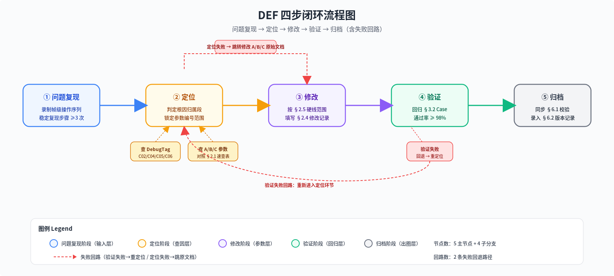

| 阶段 | 代号 | 核心职责 | 输入物 | 输出物 | 责任角色 |
|---|---|---|---|---|---|
| D 调优 | D = Tuning | 修改手感参数，修复手感类体验问题 | A/B/C 12 份文档的参数初值 | §2.4 修改记录 + §2.1 参数终值 | 动作策划 + 战斗策划 |
| E 集成 | E = QA | Bug 分级判定、回归用例执行、非法回落定位 | D 阶段修改后的参数 + 代码构建 | §3.1 Bug 分级单 + §3.2 回归通过率 | 集成 QA + 引擎工具 |
| F 运维 | F = Ops | 热更白名单配置、数据报警阈值、版本迭代 Checklist | E 阶段验收通过的参数集 | §4.1 热更白名单 + §4.2 报警配置 | 运维策划 + 服务端 |
| 文档名 | 可调参数类型 | DEF 映射章节 |
|---|---|---|
| A01 姿势参考 | Startup/Recovery 帧段基础值 | §2.1 P20–P27；§2.2 Q02/Q07/Q15 |
| A02 骨骼规格 | 挂载点骨骼存在性、HB 体积基值 | §3.4 第 3/4 类；§6.1 校验项 2–3 |
| A03 性能预算 | 单帧耗时上限、DrawCall 预算 | §4.2 帧耗时指标；§6.1 校验项 18 |
| B01 动画分镜 | 各动作总帧数、爆发帧编号 | §2.1 P18–P19 大招 Cancel；§2.2 Q03 |
| B02 姿势评审 | 姿势合规性参数、Startup 关键帧偏移 | §2.1 P20–P23；§2.5 硬线 9–12 |
| B03 面部 BS 规格 | BlendShape 权重阈值 | §6.1 校验项 10；§3.4 第 6 类 |
| C01 Hitbox 规格 | HB 体积、判定盒偏移 | §3.4 第 3 类；§2.2 Q06 |
| C02 FSM 规格 | 状态跳转合法性、回落路径 | §3.3 全部 8 类；§5.2 卡面 DebugTag |
| C03 动画事件 | 事件触发帧、事件回调参数 | §3.2 预期事件列；§3.4 第 5 类 |
| C04 输入与 Cancel 规格 | 输入缓冲帧、Cancel Early/Late 窗口 | §2.1 P01–P19；§2.2 全部 15 类；§2.3 优先级 |
| C05 镜头与震屏 | FOV 数值、震屏幅值与衰减 | §2.1 P29–P30；§4.1 镜头层 + 震屏层 |
| C06 VFX 与后处理 | VFX 挂载点、后处理强度参数 | §3.3 C06_VFX_MISSING_MOUNT；§4.1 后处理层 |
| 步骤 | 动作 | 通过判定 | 失败分支 | 对应文档 |
|---|---|---|---|---|
| ① | 问题复现：录制帧级操作序列，独立复现 ≥ 3 次 | 复现率 ≥ 90%（10 次成功 9 次以上） | 判定非必现，标记观察或转 UX 收集 | §2.4 Before/After 模板第 1–2 列 |
| ② | 定位：查 DebugTag + 对照 A/B/C 参数表，锁定根因归属段与参数编号 | 明确指向单一根因（或明确主次双因） | 定位失败 → 回 A/B/C 原文档修改规格 | §5.1 速查卡；§5.2 DebugTag 卡 |
| ③ | 修改：在 §2.5 硬线范围内调参，填写 §2.4 修改记录 | 修改后参数落在允许区间，记录完整 | 硬线冲突 → 升级评审，获得书面批准 | §2.1 速查表范围；§2.5 硬线清单 |
| ④ | 验证：执行 §3.2 高频回归 Case，校验通过率 | 回归通过率 ≥ 98%，目标 Case 100% | 验证失败 → 回退参数 → 重走步骤② | §3.2 回归用例阈值 |
| ⑤ | 归档：完成 §6.1 跨文档一致性校验，写入 §6.2 版本记录 | 18 项 Checklist 全勾选 | 归档失败 → 不得合入版本分支 | §6.1/§6.2 |

| No. | 参数名 | 默认值(F) | 可调范围(F) | 修改位置(文档·节) | 调大影响 | 调小影响 |
|---|---|---|---|---|---|---|
| P01 | InputBuffer_Fire 普攻输入缓冲 | 6 | 3 ~ 10 | C-04 §2.1 | 点射容错高，连点过度放大 | 快速点射漏发率上升 |
| P02 | InputBuffer_Dodge 闪避输入缓冲 | 5 | 3 ~ 8 | C-04 §2.2 | 闪避响应宽松，易误触 | 极限闪避窗口缩小 |
| P03 | InputBuffer_Ult 大招输入缓冲 | 8 | 5 ~ 12 | C-04 §2.3 | 大招易出，操作优先级抬升 | 爆发帧前急开困难 |
| P04 | InputBuffer_Reload 换弹输入缓冲 | 7 | 4 ~ 10 | C-04 §2.4 | 换弹响应积极，易误触取消 | 弹匣空时换弹迟滞 |
| P05 | InputBuffer_ADS 开镜输入缓冲 | 5 | 3 ~ 8 | C-04 §2.5 | 开镜容错宽，进镜过度灵敏 | 急开镜精度下降 |
| P06 | InputBuffer_Skill 技能输入缓冲 | 6 | 4 ~ 9 | C-04 §2.6 | 技能释放宽松 | 技能连招衔接窗口缩小 |
| P07 | InputBuffer_Melee 体术输入缓冲 | 5 | 3 ~ 8 | C-04 §2.7 | 体术触发频繁 | 近战距离内 3A 触发延迟 |
| P08 | Cancel_Atk1_Atk2 普攻1→普攻2 窗口 ΔF | 18 | 12 ~ 24 | C-04 §3.1 Link 1 | 1→2 衔接宽松，单段拖泥带水 | 首段断连率上升 |
| P09 | Cancel_Atk2_Atk3 普攻2→普攻3 窗口 ΔF | 16 | 10 ~ 22 | C-04 §3.1 Link 2 | 中段续连容错高 | 2→3 节奏感断 |
| P10 | Cancel_Atk3_Atk4 普攻3→普攻4 窗口 ΔF | 16 | 10 ~ 22 | C-04 §3.1 Link 3 | 中段续连容错高 | 中段体感断裂 |
| P11 | Cancel_Atk4_Atk5 普攻4→普攻5 窗口 ΔF | 18 | 12 ~ 24 | C-04 §3.1 Link 4 | 尾段续连容错高 | 4→5 末段断连 |
| P12 | Cancel_Atk5_Next 普攻5→下一轮 窗口 ΔF | 20 | 14 ~ 26 | C-04 §3.1 Link 5 | 连击循环宽松 | 满 5 段后衔接不及时 |
| P13 | Cancel_Melee_3A 体术 3A 链路 Cancel | 22 | 15 ~ 30 | C-04 §3.2 Link 6 | 3A 体术 Cancel 自由 | 3A 硬直过大不可打断 |
| P14 | Cancel_Dodge_Any 闪避→任意动作 Cancel | 3 | 3 ~ 3（硬线 ±0F） | C-04 §3.3 Link 7 | 硬线锁定，禁止调大 | 硬线锁定，禁止调小 |
| P15 | Cancel_Reload_Early 换弹→射击 Early | 42 | 36 ~ 48 | C-04 §3.4 Link 8 | 换弹早切枪宽容 | 换弹实际耗时拉长 |
| P16 | Cancel_Reload_Late 换弹→射击 Late | 90 | 78 ~ 96 | C-04 §3.4 Link 9 | 换弹全段均可打断 | 换弹后半段锁死过长 |
| P17 | Cancel_Charge_Fire 满蓄→击发 Cancel | 30 | 24 ~ 36 | C-04 §3.5 Link 10 | 满蓄停留窗口延长 | 满蓄即射压力大 |
| P18 | Cancel_Ult_Early 大招 Startup Cancel Early | 72 | 60 ~ 84 | C-04 §3.6 Link 11 | 大招前摇可提前打断 | 大招前摇锁死过长 |
| P19 | Cancel_Ult_Late 大招爆发 Cancel Late | 78 | 70 ~ 90 | C-04 §3.6 Link 12 | 爆发后可 Cancel，易衔接动作 | 爆发后硬直拉长（下限 ≥ 70F） |
| P20 | SR_Fire Startup 普攻总前摇 | 9 | 6 ~ 12 | A-01 §2 + B-01 §3.1 | 出枪更轻，可能失准 | 出枪沉、手感重 |
| P21 | SR_Dodge Startup 闪避前摇 | 2 | 1 ~ 4 | A-01 §3 + B-01 §3.2 | 闪避出得快 | 闪避前摇延迟感上升 |
| P22 | SR_Reload Startup 换弹前摇 | 12 | 8 ~ 16 | A-01 §4 + B-01 §3.4 | 换弹启动快 | 换弹启动迟 |
| P23 | SR_Ult Startup 大招前摇 | 75 | 66 ~ 84 | B-01 §4 F0–F75 | 大招爆发来的快 | 大招蓄力仪式感减弱 |
| P24 | SR_Ult Recovery 大招后摇 | 36 | 24 ~ 48 | B-01 §4 F217–F252 | 大招后摇可操作早 | 大招收尾拖慢 |
| P25 | SR_ADS Startup 开镜前摇 | 18 | 12 ~ 24 | A-01 §5 + B-01 §3.5 | 开镜快，利于急镜 | 开镜迟滞 |
| P26 | SR_Charge Startup 满蓄前摇 | 48 | 36 ~ 60 | B-01 §3.6 | 满蓄达峰快，DPS 升 | 满蓄节奏拉长 |
| P27 | SR_Melee Startup 体术前摇 | 8 | 5 ~ 12 | A-01 §6 + B-01 §3.7 | 体术出手快 | 体术出手迟 |
| P28 | HitStop_Gain 命中停顿综合倍率 | 1.00 | 0.70 ~ 1.30 | C-01 §4.2 + C-04 §4.4 | 命中反馈增强，帧时间拉长 | 命中手感发飘，反馈弱 |
| P29 | FOV_Gain 镜头 FOV 综合倍率 | 1.00 | 0.90 ~ 1.10 | C-05 §2.1 / §2.2 / §2.3 | 视野变广，远处目标变小 | 视野变窄，速度感下降 |
| P30 | Shake_Gain 震屏幅值综合倍率 | 1.00 | 0.50 ~ 1.40 | C-05 §3 四类震屏 | 震屏强，打击感升，晕动风险 | 震屏弱，打击感下降 |
| 编号 | 问题现象 | 根因段(A/B/C) | 对应参数编号 | 建议修改方向 |
|---|---|---|---|---|
| Q01 | 快速点射漏发 | C-04 输入缓冲层 | P01 P02 P07 P08 | P01 +2F ~ +4F；P08 +3F |
| Q02 | 闪避后摇连不上普攻 | C-04 Cancel 链路 | P14 P20 P21 P08 | P14 保持 3F 硬线；P20 -2F；P08 +3F |
| Q03 | 大招爆发帧感觉空 | B-01 + C-05 命中反馈 | P23 P28 P29 P30 P19 | P28 +0.15；P30 +0.20；P19 +4F |
| Q04 | 换弹取消误触 | C-04 Cancel 链路 8/9 | P04 P15 P16 | P04 -2F；P15 +3F |
| Q05 | 开镜 FOV 跳变突兀 | C-05 镜头层 | P25 P29 | P25 +3F（缓入）；P29 回 1.00 |
| Q06 | 命中反馈太弱/太强 | C-01 + C-05 | P28 P30 | 弱：P28 +0.10 ~ +0.20，P30 +0.10；强：反向 - |
| Q07 | 普攻 5 段断连 | C-04 Cancel Link 1-5 | P08 P09 P10 P11 P12 | 对应 Link +2F ~ +4F 逐段检查 |
| Q08 | 满蓄击发时震屏失衡 | C-05 震屏层 | P26 P17 P30 | P30 -0.15 ~ -0.20；P17 +3F |
| Q09 | 3A 体术衔接僵硬 | A-01 + C-04 Link 6 | P13 P27 P07 | P13 +4F；P27 -2F |
| Q10 | 同帧双按键优先级错乱 | C-04 §3 优先级表 | P01–P07 缓冲叠加 | 按 §2.3 优先级重排，不得同帧并列 |
| Q11 | 死亡倒地动作异常 | C-02 FSM 回落路径 | P24 P27 | 检查 §3.3 C02_ILLEGAL_TRANSITION |
| Q12 | 远程→近战距离切换卡顿 | A-01 + C-02 切换触发 | P27 P20 P07 | P27 -1F；P07 +1F |
| Q13 | 技能 Cancel 窗口过大/过小 | C-04 §3.6 | P18 P19 | 过大：-4F；过小：+4F（P19 不低于 70F） |
| Q14 | 输入丢弃率异常偏高 | C-04 输入缓冲深度 | P01–P07 全部 | 全缓冲 +1F ~ +2F 保底 |
| Q15 | Startup/Recovery 帧体感不对 | A-01 + B-01 帧段划分 | P20–P27 | 单段 ±2F，逐段迭代不跨多段 |
| 案例 | 同帧输入组合 | 优先级判定（胜者） | 修改建议 |
|---|---|---|---|
| C-1 | 闪避 + 大招 | 大招胜（闪避丢弃，计入 P03 缓冲） | 若玩家反馈大招误触，下调 P03 -2F |
| C-2 | 换弹 + 射击 | 换弹胜（射击进入 P01 缓冲） | 若频繁打断射击，拉大 P15 Early +4F |
| C-3 | 开镜 + 闪避 | 闪避胜（开镜丢弃） | 若开镜被吞，上调 P05 +2F，进入缓冲重试 |
| C-4 | 技能 + 体术（近战距离） | 技能胜（体术丢弃） | 若体术需要，下调 P06 -1F |
| C-5 | 大招 + 换弹 | 大招胜（换弹丢弃） | 不建议修改；属设计预期 |
| C-6 | 射击 + 开镜（持续按住） | 开镜胜（射击延后至开镜 Startup 完成） | 若 ADS 射击链延迟，下调 P25 -2F |
| C-7 | 体术 + 闪避 | 闪避胜（体术丢弃） | 若需保体术，上调 P07 +2F 并校验 P14 硬线 |
| 问题编号 | 版本号 | 修改前参数（参数=值） | 修改后参数（参数=值） | 修改理由 | 验证结果（通过/未过） | 验证人 | 日期 |
|---|---|---|---|---|---|---|---|
| DEF-Q-20260802-001 | V1.0.0-DEV | P01=5; P08=16 | P01=7; P08=19 | Q01 快速点射漏发率 18% → 目标 ≤ 5% | 通过（100 次漏发 3 次） | 策划 A | 2026-08-02 |
| DEF-Q-20260802-002 | V1.0.0-DEV | P28=0.90; P30=0.80 | P28=1.05; P30=1.00 | Q06 命中反馈偏弱，QA 复现确认 | 通过（盲测 8/10 偏好） | QA B | 2026-08-02 |
| 编号 | 硬线内容 | 允许波动 | 超限后果 |
|---|---|---|---|
| H-01 | 闪避 Startup 3F ± 0F（P14 Cancel_Dodge_Any=3F） | 0F | 破坏闪避无敌帧对齐 |
| H-02 | 大招爆发 F195 Cancel Late 78F 下限 ≥ 70F（P19） | -8F 为绝对底 | 爆发表现丢失命中帧 |
| H-03 | 大招爆发 Cancel Late 上限 ≤ 90F（P19） | +12F | 大招无敌帧被过度滥用 |
| H-04 | 大招 Startup 75F 基准 ± 9F（P23 66~84F） | ±9F | 与 B-01 分镜声画错位 |
| H-05 | 普攻 5 连击总帧数 198F ± 10F | ±10F | DPS 波动超 5%，破坏数值平衡 |
| H-06 | 3A 体术 Startup 8F 下限 ≥ 5F（P27） | -3F | 体术出帧快于命中判定生成 |
| H-07 | 开镜 FOV 三档比值固定 90:65:55（P29 仅允许整体 ±10%） | 倍率 0.90–1.10 | 破坏 C-05 镜头收敛设计 |
| H-08 | 换弹 Late Cancel 90F 下限 ≥ 78F（P16） | -12F | 换弹动画未播完即射击，视觉穿模 |
| H-09 | 普攻 1 Startup 9F 下限 ≥ 6F（P20） | -3F | 扳机早于持枪姿势到位 |
| H-10 | 普攻 1 Startup 上限 ≤ 12F（P20） | +3F | 起手过重，操作手感劣化 |
| H-11 | 闪避 Startup 2F 下限 ≥ 1F（P21） | -1F | 0F 闪避与输入帧判定冲突 |
| H-12 | 闪避 Startup 上限 ≤ 4F（P21） | +2F | 闪避体感迟钝 |
| H-13 | HitStop 综合倍率上限 ≤ 1.30（P28） | +0.30 | 全局帧拖慢，DPS 计算异常 |
| H-14 | HitStop 综合倍率下限 ≥ 0.70（P28） | -0.30 | 命中无停顿感，打击感缺失 |
| H-15 | 震屏综合倍率上限 ≤ 1.40（P30） | +0.40 | 晕动症风险上升，30 分钟测试投诉率 ≥ 10% |
| H-16 | 震屏综合倍率下限 ≥ 0.50（P30） | -0.50 | 震屏过弱，命中反馈消失 |
| H-17 | 满蓄 Cancel 30F ± 6F（P17） | ±6F | 蓄力节奏与 B-01 声轨错位 |
| H-18 | 死亡倒地 FSM 终止态锁死，禁止反向跳回活态 | 0 | 复活机制被绕过触发刷分 |
| H-19 | 输入缓冲 P01–P07 单项不得超过 12F | 单值上限 | 输入延迟累积，体感拖尾 |
| H-20 | 输入缓冲 P01–P07 总和不得超过 42F | 总和上限 | 全局输入堆积，队列溢出丢输入 |
| 影响范围 ↓ / 严重度 → | 崩溃 / 卡死 / 数据损坏 | 主流程阻断 | 次功能异常 | 体验瑕疵（可视/可听） |
|---|---|---|---|---|
| 全量用户 / 主链路 | P0 立即修复，热更 24h 内；回归期限 4h | P0 当版本修复；回归期限 8h | P1 当版本修复；回归期限 24h | P2 3 个工作日修复 |
| 部分用户 / 分支链路 | P0 立即修复，回滚包准备；回归 8h | P1 当版本修复；回归 24h | P2 3 个工作日修复 | P3 排期修复，下一迭代 |
| 单用户 / 特定设备 | P1 当版本修复；回归 24h | P2 3 个工作日修复 | P3 排期修复 | P3 观察，严重则升 P2 |
| 内测 / 开发环境 | P1 当版本修复，禁止带到外网 | P2 3 个工作日修复 | P3 排期修复 | 记录；不强制修复 |
| 链路编号 | 操作序列（帧级） | 预期结果 | 预期 FSM 节点序列 | 预期 C-03 事件 | 通过阈值 |
|---|---|---|---|---|---|
| R01 | [F1]Fire→[F20]Fire→[F40]Fire→[F60]Fire→[F80]Fire（5 连击） | 普攻 1-5 段完整播放，无断段 | IDLE→ATK1→ATK2→ATK3→ATK4→ATK5→IDLE | EVT_FIRE × 5；EVT_HIT_SHELL × 5 | 100 / 100 |
| R02 | [F1]Fire→[F18]Dodge（ATK1 Late Cancel） | ATK1 末段被闪避打断，闪避生效 | IDLE→ATK1→DODGE→IDLE | EVT_FIRE×1；EVT_DODGE_START | 98 / 100 |
| R03 | [F1]Fire→[F5]Dodge（ATK1 Early Cancel 窗口内） | ATK1 被 Cancel，闪避立即执行 | IDLE→ATK1→DODGE→IDLE | EVT_DODGE_START | 98 / 100 |
| R04 | [F1]Ult→[F195]Dodge（爆发帧 Late Cancel） | 大招爆发完成 F195 命中，F196+ 可闪避 | IDLE→ULT_START→ULT_BURST→DODGE→IDLE | EVT_ULT_BURST_HIT；EVT_DODGE_START | 98 / 100 |
| R05 | [F1]Ult→[F60]Skill（Startup Early Cancel） | 大招 Early 阶段被技能 Cancel | IDLE→ULT_START→SKILL→IDLE | EVT_SKILL_CAST | 98 / 100 |
| R06 | [F1]Hold Charge→[F48]Fire（满蓄击发） | F48 满蓄命中，伤害=满蓄值 | IDLE→CHARGE→CHARGED_FIRE→IDLE | EVT_CHARGE_FULL；EVT_FIRE | 100 / 100 |
| R07 | [F1]Hold Charge→[F30]Release | 未满蓄取消，回到 IDLE，不扣弹药 | IDLE→CHARGE→IDLE | 无 EVT_FIRE | 100 / 100 |
| R08 | [F1]Melee→[F8]Melee→[F18]Melee（3A 体术） | 3 段体术完整；每段伤害独立 | IDLE→MELEE1→MELEE2→MELEE3→IDLE | EVT_MELEE_HIT × 3 | 98 / 100 |
| R09 | [F1]Reload→[F42]Fire（Early Cancel） | 换弹 Early 窗口末尾允许切回射击 | IDLE→RELOAD→IDLE→ATK1 | EVT_RELOAD_EARLY_CANCEL；EVT_FIRE | 98 / 100 |
| R10 | [F1]Reload→[F90]Fire（Late Cancel） | 换弹 Late 窗口末尾切回射击；弹药 +N | IDLE→RELOAD→ATK1 | EVT_RELOAD_COMPLETE；EVT_FIRE | 100 / 100 |
| R11 | [F1]ADS→[F18]Fire（开镜射击） | F18 开镜完成后击发，FOV = ADS 值 | IDLE→ADS→ADS_FIRE→ADS→IDLE | EVT_ADS_ENTER；EVT_FIRE | 100 / 100 |
| R12 | [F1]ADS→[F5]Release ADS | 开镜中途取消，回腰射 FOV | IDLE→ADS→IDLE | EVT_ADS_EXIT | 100 / 100 |
| R13 | [F1]Skill→[F30]Dodge（技能 Cancel） | 技能 Startup 完成前可 Cancel 闪避 | IDLE→SKILL→DODGE→IDLE | EVT_SKILL_CANCEL；EVT_DODGE_START | 96 / 100 |
| R14 | [F1]HP=0 触发死亡 | 倒地动画完整播放，锁死 Dead 态，禁止操作 | ANY→DEAD（终止态） | EVT_CHARACTER_DEAD | 100 / 100 |
| R15 | [F1] 复活指令 → 回到 IDLE | 死亡→复活路径合法，不回落至 ATK 状态 | DEAD→REVIVE→IDLE | EVT_CHARACTER_REVIVE | 100 / 100 |
| R16 | 远程距离 Fire→距离切近→Melee | 远程→近战距离切换无卡顿，体术按 P07/P27 执行 | ATK→IDLE→MELEE1→... | EVT_DISTANCE_TO_MELEE；EVT_MELEE_HIT | 96 / 100 |
| R17 | 近战距离 Melee→距离切远→Fire | 近战→远程切换无卡顿，射击按 P01/P20 执行 | MELEE→IDLE→ATK1→... | EVT_DISTANCE_TO_RANGED；EVT_FIRE | 96 / 100 |
| R18 | [F1]Fire×5 连击→[F180]Ult（5 段后接大招） | 普攻 5 段完成后大招无缝衔接 | ATK5→ULT_START→ULT_BURST→IDLE | EVT_FIRE×5；EVT_ULT_BURST_HIT | 98 / 100 |
| R19 | [F1]Reload→[F20]Dodge（换弹中段闪避） | 换弹被闪避 Cancel；弹药不增 | RELOAD→DODGE→IDLE | EVT_RELOAD_CANCEL；EVT_DODGE_START | 98 / 100 |
| R20 | 连续 5 次 Dodge→每次 3F Startup | 五次闪避 P21 稳定 = 2F ± 1F；无敌帧对齐 | IDLE→DODGE→IDLE × 5 | EVT_DODGE_START × 5；EVT_INVINCIBLE × 5 | 100 / 100（单帧误差 ≤ 1F） |
| 报错 DebugTag | 触发含义 | 定位步骤 1-2-3 | 修改指向文档章节 |
|---|---|---|---|
| C02_ILLEGAL_TRANSITION | FSM 发生未定义跳转（例：DEAD→ATK1） | 1. 打印触发源节点与目标节点；2. 对照 C-02 §2 状态跳转表定位缺失边；3. 检查输入队列是否在死亡态仍在派发 | C-02 §2 状态转移表；§3.3 回落路径 |
| C04_EARLY | 在动作 Early Cancel 窗口之前收到打断输入 | 1. 打印输入到达帧号与动作 Startup 当前帧；2. 核对 C-04 §3 Link N Early 值与当前帧差；3. 检查输入缓冲是否跨动作滞留 | C-04 §3 各 Link Early 定义；§2.1 P08–P19 |
| C04_LATE | 动作已超过 Late Cancel 窗口，输入被拒 | 1. 打印动作已播帧数 vs Late 阈值；2. 核对 C-04 §3 Link N Late 值；3. 若 Late 值本身偏小，按 §2.5 硬线申请上调 | C-04 §3 各 Link Late 定义；§2.5 H-02/H-03/H-08 |
| C05_STATE_OVERFLOW | 镜头/震屏状态机栈深度 > 8 层 | 1. 打印状态栈全链路；2. 检查是否成对 Enter/Exit；3. 大招+震屏+命中叠加场景重点排查 | C-05 §1 状态栈规则；§4.3 P30 震屏倍率 |
| C06_VFX_MISSING_MOUNT | VFX 挂载点骨骼在当前动作中不存在 | 1. 打印 VFX 资源名与挂载骨骼名；2. 对照 A-02 §3 骨骼清单与动作中骨骼可见帧；3. 在 C-06 §2 中更换挂载点或补动作 | A-02 §3 骨骼清单；C-06 §2 挂载点表 |
| C02_DEAD_LOOP | FSM 在两节点间互跳 ≥ 10 次/秒 | 1. 打印两节点及条件；2. 检查跳转条件优先级并列导致乒乓；3. 合并条件或升优先级 | C-02 §3 条件冲突规则；§2.3 优先级表 |
| C03_EVENT_DUP | 同一 C-03 事件在一帧内触发 ≥ 2 次 | 1. 打印事件名与触发源动作；2. 检查 B-01 分镜关键帧是否重复打标；3. 去重或改为累计事件 | B-01 §5 事件打点；C-03 §2 事件列表 |
| C04_PRIORITY_ABUSE | 1 秒内高优先级动作打断低优先级 ≥ 8 次 | 1. 打印被打断链路；2. 核对 §2.3 案例清单是否为设计预期；3. 若异常则调整对应缓冲 -1F ~ -2F | §2.3 优先级冲突 7 类；C-04 §3.7 优先级表 |
| 类别 | 判定规则（失败条件） | 表现 | 修复责任方 |
|---|---|---|---|
| 1. 弹药前置 | Ammo=0 且 EVT_FIRE 被触发 | 空仓仍能开火，DPS 异常 | 战斗策划（检查弹药判定） + 程序（前置判定位置） |
| 2. 大招冷却前置 | UltCD=0 且 EVT_ULT_BURST_HIT 被触发 | 大招无冷却可连放 | 战斗策划 + 技能系统 |
| 3. HB 体积前置 | HitBox 体积 = 0 且命中判定被激活 | 子弹穿体无伤；体术无判定 | TA 美术（A-02/C-01 HB 数据） + 动作策划 |
| 4. 挂载点骨骼前置 | VFX 指定挂载骨骼在动作帧中不存在 | 特效不显示或挂到原点 (0,0,0) | TA 美术（A-02 骨骼） + VFX 美术（C-06 挂载表） |
| 5. 动画事件前置 | C-03 事件触发帧 ≥ 动作总帧数 | 事件永不触发；换弹/大招关键逻辑失效 | 动作策划（B-01 分镜帧号） + 程序（边界校验） |
| 6. BS 权重前置 | 面部 BlendShape 目标索引越界或权重 > 1.0 | 表情穿模；面部网格爆面 | 面部美术（B-03 BS 清单） + 程序（权重 Clamp） |
| 分类 | No. | 参数名 | 热更允许 | 范围上限 | 范围下限 | 风险等级 |
|---|---|---|---|---|---|---|
| 输入层 (7) | H01 | P01 InputBuffer_Fire | 是 | 10F | 3F | 低 |
| H02 | P02 InputBuffer_Dodge | 是 | 8F | 3F | 中 | |
| H03 | P03 InputBuffer_Ult | 仅限小范围 | 12F | 5F | 高 | |
| H04 | P04 InputBuffer_Reload | 是 | 10F | 4F | 低 | |
| H05 | P05 InputBuffer_ADS | 是 | 8F | 3F | 低 | |
| H06 | P06 InputBuffer_Skill | 仅限小范围 | 9F | 4F | 中 | |
| H07 | P07 InputBuffer_Melee | 是 | 8F | 3F | 低 | |
| Cancel 层 (12) | H08 | P08 Cancel_Atk1_Atk2 | 是 | 24F | 12F | 中 |
| H09 | P09 Cancel_Atk2_Atk3 | 是 | 22F | 10F | 中 | |
| H10 | P10 Cancel_Atk3_Atk4 | 是 | 22F | 10F | 中 | |
| H11 | P11 Cancel_Atk4_Atk5 | 是 | 24F | 12F | 中 | |
| H12 | P12 Cancel_Atk5_Next | 是 | 26F | 14F | 中 | |
| H13 | P13 Cancel_Melee_3A | 是 | 30F | 15F | 中 | |
| H14 | P14 Cancel_Dodge_Any | 否（硬线） | 3F | 3F | 高 | |
| H15 | P15 Cancel_Reload_Early | 是 | 48F | 36F | 低 | |
| H16 | P16 Cancel_Reload_Late | 是 | 96F | 78F | 中 | |
| H17 | P17 Cancel_Charge_Fire | 仅限小范围 | 36F | 24F | 高 | |
| H18 | P18 Cancel_Ult_Early | 否 | 84F | 60F | 高 | |
| H19 | P19 Cancel_Ult_Late | 仅限小范围 | 90F | 70F | 高 | |
| 镜头层 (12) | H20 | P29 FOV_Gain 综合倍率 | 是 | 1.10 | 0.90 | 低 |
| H21 | C-05 FOV_HipShot 腰射绝对值 | 仅限小范围 | 99° | 81° | 中 | |
| H22 | C-05 FOV_ADS 开镜绝对值 | 仅限小范围 | 72° | 59° | 中 | |
| H23 | C-05 FOV_Ult 大招绝对值 | 否 | 61° | 50° | 高 | |
| H24 | C-05 FOV_Lerp_Speed FOV 过渡速度 | 是 | 1.25x | 0.75x | 低 | |
| H25 | C-05 Camera_Distance 相机距离 | 是 | +10% | -10% | 中 | |
| H26 | C-05 Camera_Height 相机高度 | 是 | +8% | -8% | 中 | |
| H27 | C-05 ADS_Lerp_Speed 开镜过渡速度 | 是 | 1.30x | 0.70x | 低 | |
| H28 | C-05 Dither_Strength 镜头抖动强度 | 是 | 1.20x | 0.60x | 低 | |
| H29 | C-05 Recoil_Gain 后坐力倍率 | 是 | 1.20x | 0.80x | 中 | |
| H30 | C-05 Recoil_Recovery 后坐力回复速度 | 是 | 1.30x | 0.70x | 低 | |
| H31 | C-05 Sprint_FOV 奔跑 FOV 增量 | 仅限小范围 | +8° | +3° | 中 | |
| 震屏层 (10) | H32 | P30 Shake_Gain 综合倍率 | 是 | 1.40 | 0.50 | 中 |
| H33 | C-05 Shake_Fire_Normal 普攻震屏幅值 | 是 | 1.30x | 0.70x | 低 | |
| H34 | C-05 Shake_Hit_Landed 命中震屏幅值 | 是 | 1.30x | 0.70x | 低 | |
| H35 | C-05 Shake_Ult_Burst 大招震屏幅值 | 仅限小范围 | 1.20x | 0.80x | 高 | |
| H36 | C-05 Shake_Explosion 爆炸震屏幅值 | 仅限小范围 | 1.20x | 0.80x | 中 | |
| H37 | C-05 Shake_Decay 震屏衰减系数 | 是 | 1.20x | 0.70x | 低 | |
| H38 | C-05 Shake_Freq 震屏频率 | 是 | 1.15x | 0.85x | 低 | |
| H39 | C-05 Shake_On_ADS 开镜震屏缩放 | 是 | 0.70x | 0.30x | 低 | |
| H40 | C-05 Shake_Chrage_Full 满蓄释放震屏 | 仅限小范围 | 1.25x | 0.75x | 中 | |
| H41 | C-05 Shake_Dodge 闪避震屏 | 是 | 1.30x | 0.50x | 低 | |
| 命中反馈 (9) | H42 | P28 HitStop_Gain 综合倍率 | 是 | 1.30 | 0.70 | 中 |
| H43 | C-01 HitStop_Fire 普攻命中停顿 | 是 | 6F | 1F | 低 | |
| H44 | C-01 HitStop_HeadShot 爆头停顿 | 是 | 10F | 3F | 中 | |
| H45 | C-01 HitStop_Ult 大招命中停顿 | 仅限小范围 | 14F | 6F | 高 | |
| H46 | C-01 HitStop_Melee 体术命中停顿 | 是 | 8F | 2F | 低 | |
| H47 | C-01 HitStop_Charge 满蓄命中停顿 | 仅限小范围 | 12F | 4F | 中 | |
| H48 | C-06 HitFlash_Alpha 命中闪光强度 | 是 | 1.20x | 0.50x | 低 | |
| H49 | C-06 HitMarker_Size 命中标记尺寸 | 是 | 1.25x | 0.75x | 低 | |
| H50 | C-06 HitSlowMo 命中慢动作时长 | 仅限小范围 | 0.4s | 0.1s | 高 | |
| 后处理 (10) | H51 | C-06 PP_Bloom 泛光强度 | 是 | 1.30x | 0.60x | 低 |
| H52 | C-06 PP_ColorGrade_LUT 颜色分级 LUT 混合 | 否 | 1.0 | 0.0 | 高 | |
| H53 | C-06 PP_Contrast 对比度 | 是 | +15% | -15% | 低 | |
| H54 | C-06 PP_Saturation 饱和度 | 是 | +15% | -15% | 低 | |
| H55 | C-06 PP_Vignette 暗角强度 | 是 | 1.25x | 0.50x | 低 | |
| H56 | C-06 PP_ChromAb 色差强度 | 是 | 1.30x | 0.00x | 低 | |
| H57 | C-06 PP_DOF_Blur 景深模糊强度 | 仅限小范围 | 1.20x | 0.60x | 中 | |
| H58 | C-06 PP_MotionBlur 运动模糊强度 | 是 | 1.25x | 0.00x | 低 | |
| H59 | C-06 PP_Ult_Override 大招专属后处理混合 | 否 | 1.0 | 0.5 | 高 | |
| H60 | C-06 PP_Sharpen 锐化强度 | 是 | 1.30x | 0.30x | 低 |
| 指标 | 正常值 | 黄灯阈值 (±10%) | 红灯阈值 (±25%) | 关联 DEF 章节 |
|---|---|---|---|---|
| 命中 Cancel 成功率 | 97.5% | < 87.8% 或 > 99.9% | < 73.1% 或 > 100% | §2.1 P08–P19；§2.2 Q02/Q07/Q13 |
| 普攻 5 连击完成率 | 92.0% | < 82.8% | < 69.0% | §2.1 P08–P12；§2.2 Q07；§3.2 R01 |
| 大招 252F 全程完整率 | 98.0% | < 88.2% 或 > 99.9% | < 73.5% 或 > 100% | §2.1 P18/P19/P23/P24；§2.2 Q03；§2.5 H-02~H-04 |
| 输入丢弃率 | 1.2% | > 2.3% | > 4.2% | §2.1 P01–P07；§2.2 Q14；§3.3 C04_EARLY/LATE |
| 帧耗时 > 33ms 占比 | 0.8% | > 1.8% | > 3.3% | A-03 预算；§6.1 校验项 18；§4.1 后处理层 |
| 热更参数校验不一致率 | 0.0% | > 0.1% | > 0.5% | §4.1 热更白名单；§6.1 校验项 1–10 |
| 非法回落报错率 (C02/C04/C05/C06) | 0.02% | > 0.12% | > 0.50% | §3.3 8 类定位；§5.2 DebugTag 卡 |
| 大招 Cancel Late 超限率 (P19 < 70F) | 0.0% | > 0.05% | > 0.20% | §2.5 H-02；§4.1 H19 |
| 闪避 3F 硬线偏差率 | 0.0% | > 0.10% | > 0.30% | §2.5 H-01；§4.1 H14 |
| VFX 挂载缺失率 (C06_VFX_MISSING) | 0.0% | > 0.05% | > 0.20% | §3.3 C06_VFX_MISSING_MOUNT；§3.4 第 4 类 |
| 版本号 | 日期 | 阶段 | 变更摘要（参数/链路/文档） | 影响章节 | 修改人 | 评审人 | 回归结果 | 备注 |
|---|---|---|---|---|---|---|---|---|
| V1.0 | 2026-08-02 | D+E+F 初版 | DEF 三阶段整合速查手册首版；含 30 项参数、20 条回归、60 项热更白名单 | §1–§6 全章节 | 动作策划 | 主策 / 技术负责人 | 通过（20/20 Case） | 初始基线版本 |
| V1.0.1 | 待填 | D 调优 | ||||||
| V1.1.0 | 待填 | E 集成 | ||||||
| V1.2.0 | 待填 | F 运维 | ||||||
| 填写规则：参数变更行必须填写具体 P 编号与前后值；章节影响列必须明确到 §N.M；评审人为双签字（主策 + 技术负责人）方可生效。 | ||||||||